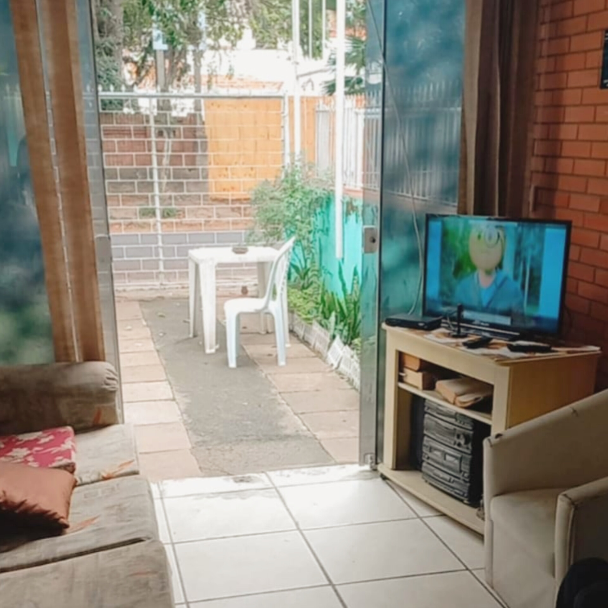
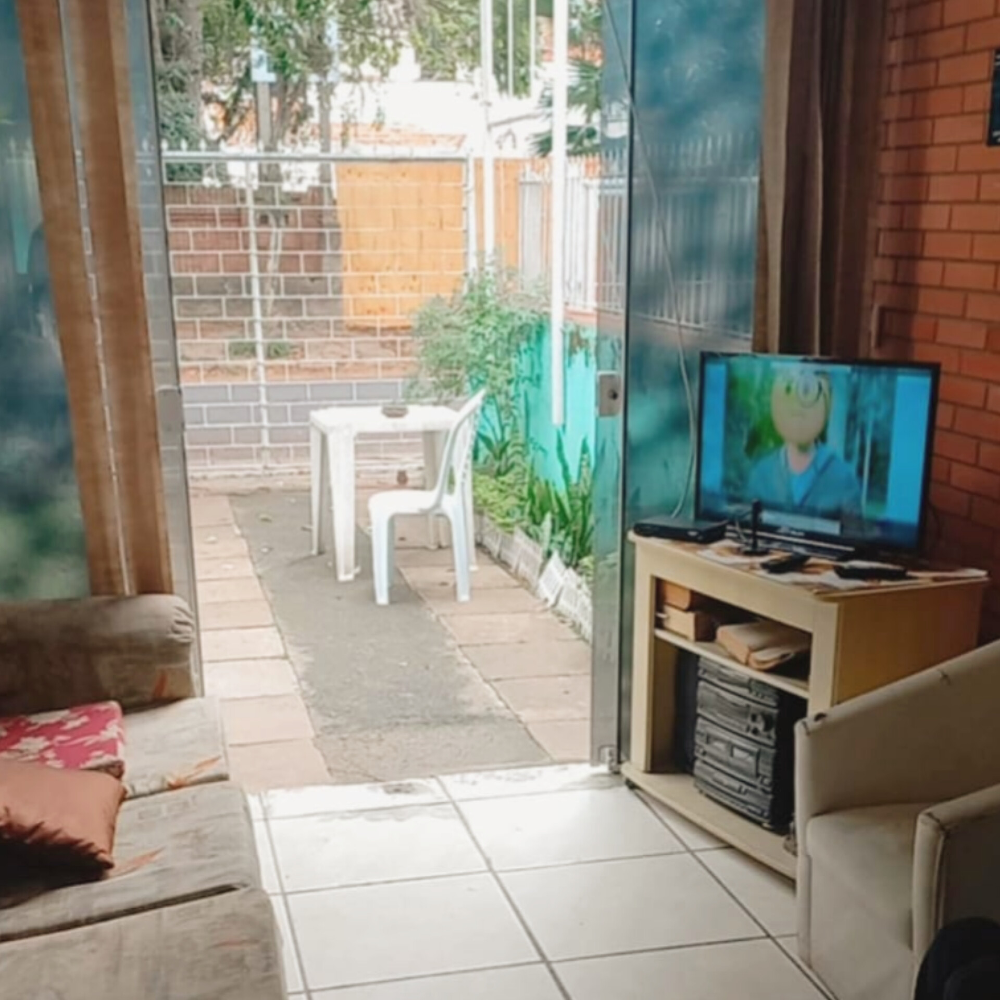

Nossa História, Filosofia e o que acreditamos
Com mais de 25 anos de experiência, o Residencial Jardim do Sol se consolidou como referência em cuidado geriátrico especializado, oferecendo um ambiente acolhedor, seguro e centrado no bem-estar.
Nosso modelo de atendimento é baseado em uma abordagem holística, que considera o ser humano em sua totalidade — corpo, mente e emoções. Cada residente é tratado com respeito, carinho e atenção personalizada.
Por muito tempo, o termo "asilo" foi associado a abandono, solidão e desamparo. Essa visão ultrapassada ainda gera resistência e culpa em quem busca apoio especializado para o cuidado de um familiar idoso.
Mas é preciso entender: geriatria não é um asilo. Uma geriatria moderna é um espaço de acolhimento, atenção integral e carinho diário. É um lugar onde o idoso é respeitado em sua individualidade e cuidado com responsabilidade e presença.
No Residencial Geriátrico Jardim do Sol, oferecemos um ambiente que promove bem-estar, dignidade e qualidade de vida. Aqui, cuidar é amar, é estar junto, é garantir que cada fase da vida seja vivida com plenitude e respeito.
Portanto, você não está abandonando seu familiar ao escolher uma geriatria. Pelo contrário: está tomando uma decisão consciente e afetuosa, que assegura a ele cuidados profissionais, companhia, segurança e qualidade de vida que muitas vezes não seriam possíveis em casa.
 
